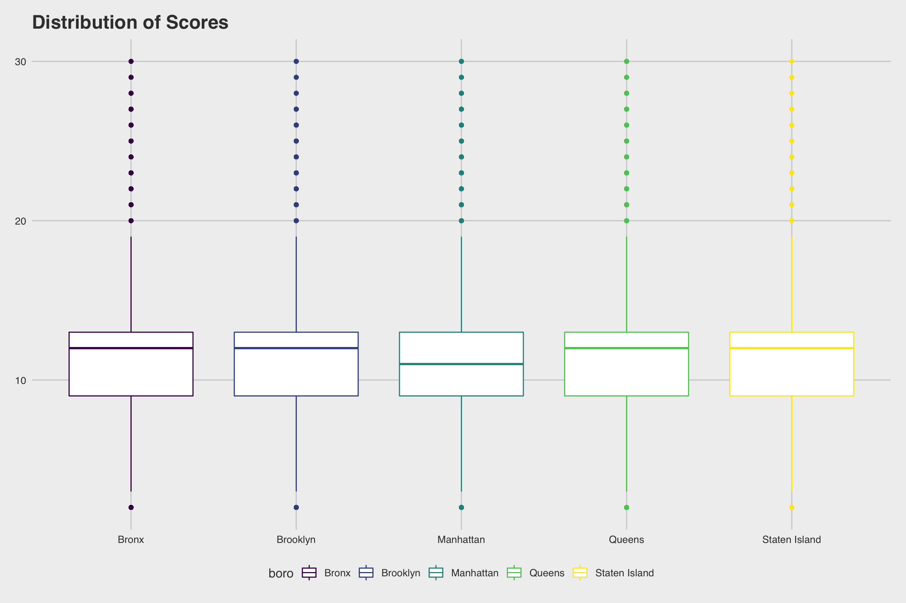
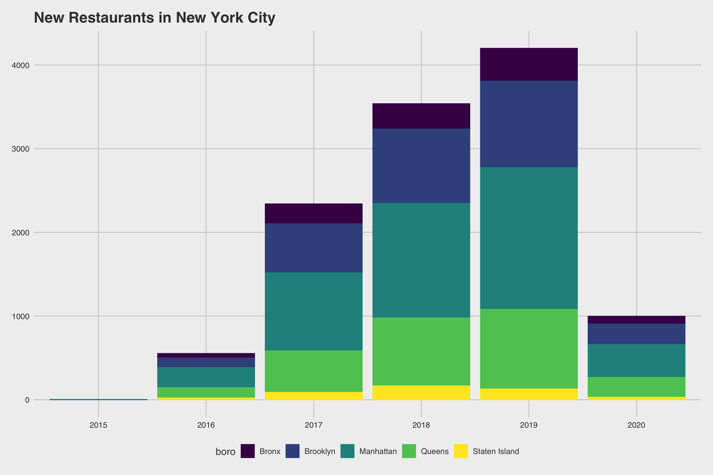

Setup
knitr::opts_chunk$set(fig.width=12, fig.height=8, fig.path='Figs/',
warning=FALSE, message=FALSE)
Loading libraries
library(tidyverse)
library(httr)
library(jsonlite)
library(plotly)
library(leaflet)
library(knitr)
theme_set(
ggthemes::theme_fivethirtyeight() + theme(legend.position = "bottom")
)
options(
ggplot2.continuous.colour = "viridis",
ggplot2.continuous.colour = "viridis"
)
scale_colour_discrete = scale_color_viridis_d
scale_fill_discrete = scale_fill_viridis_d
1. Pulling in the dataset
api_url = "https://data.cityofnewyork.us/resource/43nn-pn8j.csv"
rest_inspect =
GET(api_url, query = list("$limit" = 50000)) %>%
content("parsed")
2. Data wrangling, cleaning up the dataset.
rest_inspect = rest_inspect %>%
filter(grade %in% c("A", "B", "C"), boro != "0")
3. Exploring dataset
Grades
Counting the number of restaurants by borough and by grade.
rest_inspect %>%
count(boro, grade) %>%
pivot_wider(names_from = grade, values_from = n) %>%
kable()
| Bronx |
1789 |
383 |
164 |
| Brooklyn |
5007 |
849 |
278 |
| Manhattan |
7958 |
1186 |
506 |
| Queens |
4649 |
759 |
298 |
| Staten Island |
723 |
112 |
33 |
Filtering based on Cuisine
Italian/ Pizza Restaurants in NYC
italian = c("Italian", "Italian/Pizza")
rest_inspect %>%
filter(str_detect(cuisine_description, italian)) %>%
count(boro, grade) %>%
pivot_wider(names_from = grade, values_from = n) %>%
kable()
| Bronx |
52 |
8 |
7 |
| Brooklyn |
123 |
15 |
6 |
| Manhattan |
266 |
43 |
19 |
| Queens |
98 |
11 |
3 |
| Staten Island |
60 |
11 |
4 |
French Restaurants in NYC
rest_inspect %>%
filter(str_detect(cuisine_description, "French")) %>%
count(boro, grade) %>%
pivot_wider(names_from = grade, values_from = n) %>%
kable()
| Brooklyn |
34 |
8 |
3 |
| Manhattan |
204 |
17 |
6 |
| Queens |
15 |
1 |
NA |
Mexican Restaurants in NYC
rest_inspect %>%
filter(str_detect(cuisine_description, "Mexican")) %>%
count(boro, grade) %>%
pivot_wider(names_from = grade, values_from = n) %>%
kable()
| Bronx |
98 |
23 |
14 |
| Brooklyn |
209 |
47 |
16 |
| Manhattan |
255 |
37 |
15 |
| Queens |
165 |
28 |
14 |
| Staten Island |
42 |
10 |
5 |
Pan-Asian Restaurants in NYC
asian = c("Asian", "Japanese", "Korean", "Chinese")
rest_grade =
rest_inspect %>%
filter(str_detect(cuisine_description, asian)) %>%
count(boro, grade) %>%
pivot_wider(names_from = grade, values_from = n) %>%
kable()
Critical flags identified at inspection
rest_inspect %>%
count(boro, critical_flag) %>%
drop_na(critical_flag) %>%
pivot_wider(names_from = critical_flag, values_from = n) %>%
mutate(rest_ratio = N / (N+Y)) %>%
kable()
| Bronx |
1120 |
1200 |
0.4827586 |
| Brooklyn |
3011 |
3062 |
0.4958011 |
| Manhattan |
4636 |
4945 |
0.4838743 |
| Queens |
2815 |
2844 |
0.4974377 |
| Staten Island |
422 |
439 |
0.4901278 |
Year to Year Trends in New Restaurants
rest_year_plot =
rest_inspect %>%
filter(str_detect(inspection_type, "Initial")) %>%
separate(grade_date, sep="-", into = c("grade_year", "grade_month", "grade_day")) %>%
count(boro, grade_year) %>%
ggplot(aes(x = grade_year, y = n, color = boro)) +
geom_col((aes(fill = boro))) +
labs(
title = "New Restaurants in New York City",
x = "Year",
y = "Number of Restaurants")
rest_year_plot

Restaurant Scores
Boxplot of Scores by Borough
rest_inspect %>%
group_by(boro) %>%
filter(score %in% 1:30) %>%
ggplot(aes(x = boro, y = score, color = boro)) +
geom_boxplot() +
labs(
title = "Distribution of Scores",
x = "Boro",
y = "Score")
